Hyperparameter Tuning with Keras Tuner
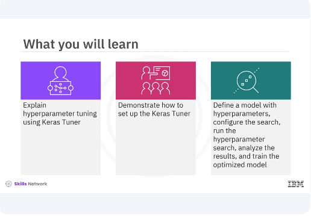
After watching this video, you'll be able explain hyperparameter tuning using Keras Tuner. Demonstrate how to set up the Keras Tuner, define a model with hyperparameters, configure the search, run the hyperparameter search, analyze the results and train the optimized model.
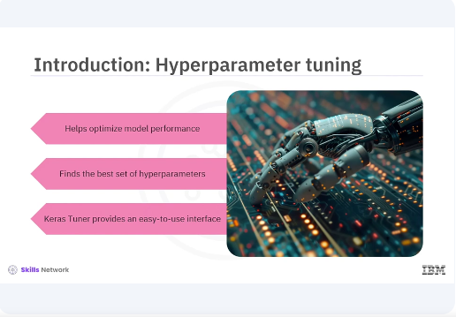
Hyperparameter tuning is a crucial step in the machine learning pipeline as it helps optimize model performance by finding the best set of hyperparameters. Keras Tuner simplifies this process by providing an easy to use interface for hyperparameter optimization.
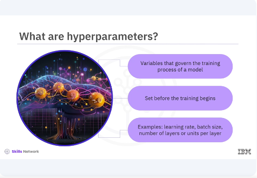
Hyperparameters are the variables that govern the training process of a model. Unlike model parameters which are learned during training, hyperparameters must be set before the training begins. Examples include the learning rate, batch size, and the number of layers or units in a neural network.
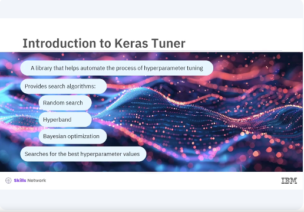
Keras Tuner is a library that helps automate the process of hyperparameter tuning. It provides several search algorithms including random search, hyperband and Bayesian optimization. These algorithms efficiently search for the best hyperparameter values for your model.
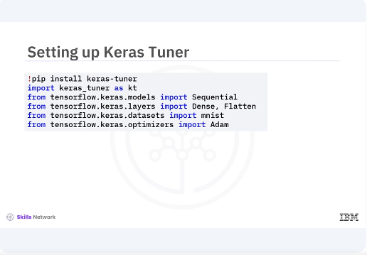
Lets start by setting up the Keras Tuner. You will install the library and import the necessary modules. You begin by installing Keras Tuner using pip and importing the required modules. This includes the Keras Tuner module along with tensorflow and Keras components for building the model and loading the dataset.
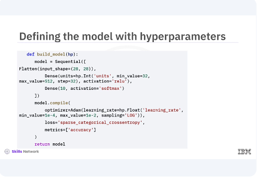
Next you will define a model building function where you specify the hyperparameters you want to tune. The call method applies the self attention followed by the feedforward network with residual connections and layer normalization. In the given code snippet you define a simple neural network model with a flattened layer and two dense layers. You use the hyperparameter object to specify the range of the values for the number of units in the hidden layer and the learning rate. The hp.int function is used for integer hyperparameters while the hp.float function is used for floating point hyperparameters.
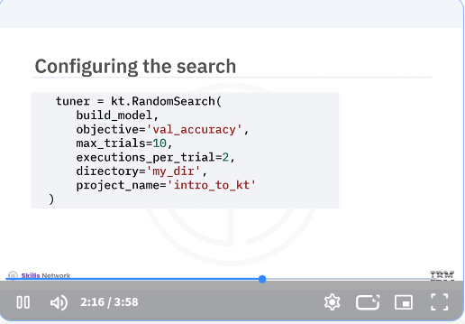
Now you will configure the search process by creating a random search tuner. This tuner will explore the hyperparameter space and find the best configurations based on model performance. In the code snippet, you create a random search tuner and specify the model building function. The optimization objective, validation accuracy, the number of trials, and the number of executions per trial. You also set the directory and project name for storing the results.
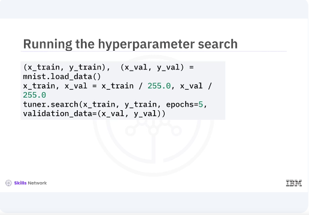
With the tuner configured, you can now run the hyperparameter search. You will use the search method and pass in the training data, validation data, and the number of epochs. You load and preprocess the MNIST dataset, then run the hyperparameter search using the search method. The tuner will evaluate different hyperparameter combinations and find the best one based on validation accuracy.
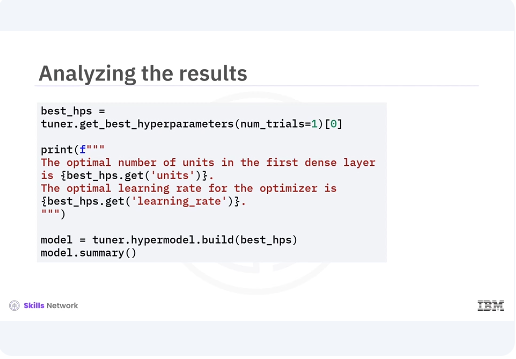
After the search is complete, you can retrieve the best hyperparameters and build a model with these optimized values. You use the get best hyperparameters method to retrieve the best hyperparameter values and print them. Then you build a model with these optimized hyperparameters and print its summary.
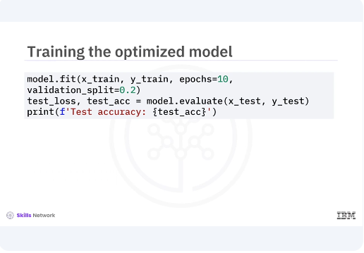
Finally, you train the model with the optimized hyperparameters on the full training dataset and evaluate its performance on the test set. This final step ensures that the model performs well with the selected hyperparameters.
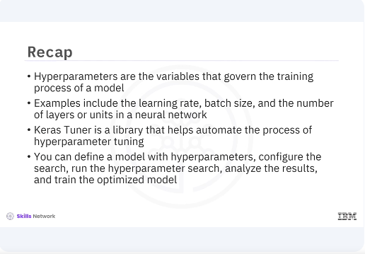
In this video, you learned hyperparameters are the variables that govern the training process of a model. Examples include the learning rate, batch size, and the number of layers or units in a neural network. Keras Tuner is a library that helps automate the process of hyperparameter tuning. You can define the model with hyperparameters, configure the search, run the hyperparameter search, analyze the results, and train the optimized model. [MUSIC]